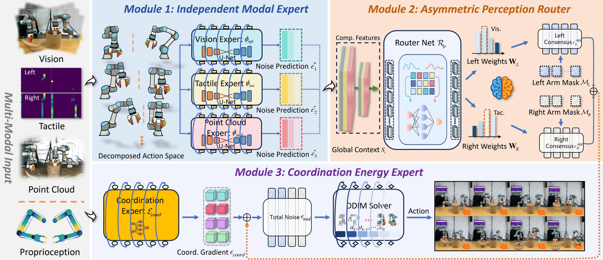

HemiDiff enhances robustness by using an asymmetric routing mechanism to mask failed modalities and dynamically adjust multimodal contributions without retraining, unlike standard early-fusion strategies.
Simulation in RLbench2
We conduct simulation experiments using RLBench2, an extension of RLBench specifically designed for bimanual manipulation. The benchmark includes six tasks: Lift Ball, Lift Tray, Push Box, Push Buttons, Put Item into Drawer and Straighten Rope.
Real-World Tasks
The real-world platform consists of two UR5e robotic arms equipped with PGI grippers and four flexible piezoresistive tactile arrays, each containing 16×16 sensing units with a spatial resolution of 2 mm. The visual system comprises three Intel RealSense cameras from different viewpoints with a resolution of 640 × 480. We evaluate three categories of challenging tasks: (i) precision assembly, including Hammer into Slot and Insert Peg into Hole; (ii) occlusion handling, including Retrieve Occluded Bag and Retrieve Transparent Object, and (iii) bimanual coordination, including Handover Bread to Plate and Place Food on Plate.
Comparisons with Baselines
In real-world, we compare HemiDiff with five SOTA methods: ACT, DP, DP3, DP (RGB+Tactile) with Feature Concat, and VQ-BET.
Generalization
To evaluate the generalization capability of HemiDiff, we introduce five representative industrial perturbations on a real robotic platform: (i) Human interference by changing the target object position at inference time; (ii) Random visual occlusion of a camera view; (iii) Single-sided tactile sensor failure; (iv) Viewpoint perturbation by translating the camera by 3 cm and rotating it by 3°; (v) Abrupt lighting variation during critical manipulation stages.
Abstract
Humans excel at coordinated bimanual manipulation, whereas robots face significant challenges in complex bimanual tasks due to heterogeneous conflicts in multimodal perception and the fragility of fixed input structures. To address this, we propose Hemispheric Diffusion (HemiDiff), a bimanual control framework that unifies perception-specific modalities and physical coordination within a generative policy. HemiDiff employs independently trained modality experts to process heterogeneous sensory inputs and uses an asymmetric perception router to dynamically allocate attention weights between the left and right arms based on occlusion or contact states. In addition, a coordination energy expert is introduced to impose geometric consistency constraints during the denoising process. This design enables adaptation to sensor failures without retraining and effectively mitigates modality dominance issues in asymmetric tasks. Experimental results demonstrate that HemiDiff achieves an average success rate of 76% on real-world tasks, significantly outperforming existing SOTA baselines, while maintaining stable manipulation performance under typical industrial disturbances.
Overview

Overview of HemiDiff. The HemiDiff framework consists of three core components. Independent modality experts extract visual, tactile, and point cloud features; an asymmetric perception router dynamically generates modality weights and masks for the left and right arm action subspaces based on global context, enabling perceptual decoupling in asymmetric tasks; and a coordination energy expert injects soft gradients from a physical manifold during denoising, preserving perceptual independence while enforcing physically consistent relative motion between the two arms